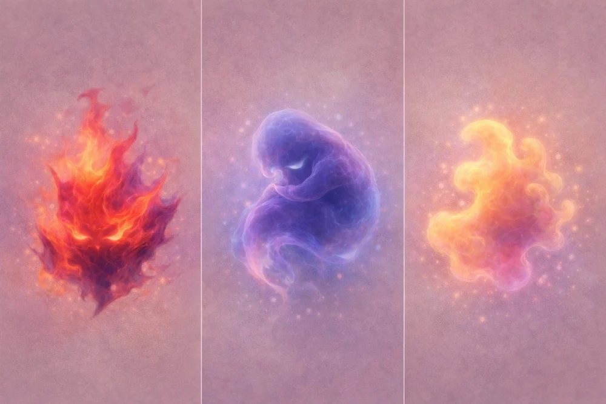

Hej, lille banker
Rytme, gentagelse og nærvær. Noget at lytte til og mærke sammen.
Bankeren følger med fra fortællingerne til arbejdet med sanseligt samspil på skærmen og i fysisk form.

Bankeren er det, man mærker indeni, før man altid har ord for det. I fortællingerne får det form og farve. Udtrykket vokser med barnet.
Rytme, gentagelse og nærvær. Noget at lytte til og mærke sammen.
Venskaber og små situationer, der kan føles store. Plads til at genkende noget uden at forklare alt.
Alma øver sig på grænser og på at bruge sin stemme mellem de andre.
Læs hele bogen →Vi arbejder hen imod en responsiv Bankeren på telefon og computer. Kontakt og ændringer over tid skal kunne mødes af et levende visuelt udtryk.
I børnerummet kan du allerede prøve en enkel farve- og formleg. Den er en lille skitse, som endnu ikke bruger Maxis beslutningskerne.
Prøv farveformen →En lampe med lys og organisk bevægelse og en blød Bankeren at holde om. Det videre arbejde omfatter sansning og respons efter samme grundprincipper som Maxi.
Se det fysiske koncept ↗Maxi er en sansende companion-prototype med M.E.M.I. som beslutningskerne. Variationer i kontakt og omgivelser omsættes til et spændingsfelt, som påvirker dens respons. Den fysiske prototype arbejder med lydstyrke, bevægelse, tryk, lys og egen kropstemperatur.
Bankeren kan bygge videre på denne arkitektur med sit eget genkendelige udtryk. Skærm og fysisk krop giver forskellige muligheder for at sanse og svare.
Systemets tilstand er ikke en måling af barnets følelse. Farver og rytmer er noget at møde og udforske. Barnet må ændre samspillet, afvise det eller stoppe.
Maxi findes som software- og hardwareprototype. Den fysiske Bankeren er under udvikling. Der er ikke en færdig Bankeren-app eller et fysisk produkt til download eller køb her.
Læs om Maxi og det tilsigtede anvendelsesområde ↗Læs om grundlaget →